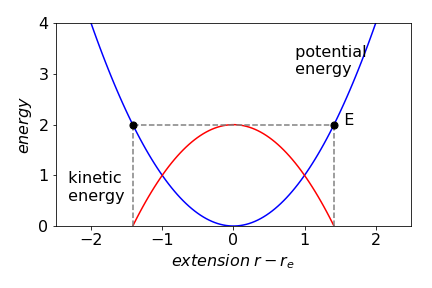
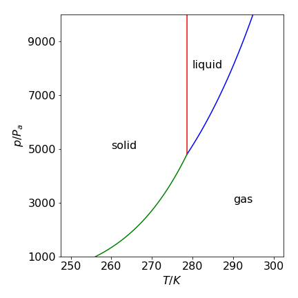
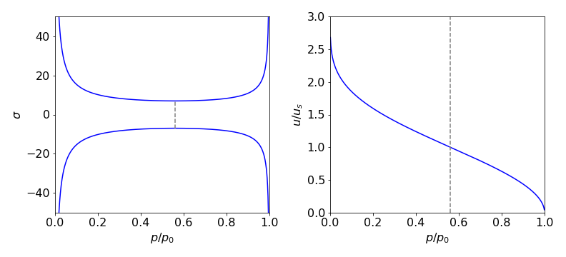

Solutions Q1 - 14
Contents
Solutions Q1 - 14#
# import all python add-ons etc that will be needed later on
%matplotlib inline
import numpy as np
import matplotlib.pyplot as plt
from sympy import *
init_printing() # allows printing of SymPy results in typeset maths format
plt.rcParams.update({'font.size': 16}) # set font size for plots
Q1 answer#
The kinetic energy is zero and the total energy \(E\) is the same as the potential energy at the turning point, figure 38.
(a) By definition the energy is \(E=\int k(r-r_e)dr\) and because \(k\) and \(r_e\) are constants, these can be taken outside the integral
where the integral \(\int dr = r\). Note that only one constant \(c\) is needed even though there are two integrals.
To solve the specific problem, the definite integral with limits \(1.146r_e\) and \(r_e\) (in nm) is

Figure 38. Potential energy (blue) and kinetic energy (red) of a diatomic molecule as a vibrating harmonic oscillator. The turning points,where the kinetic energy is zero are marked with black dots.n The total energy is \(E\).
(b) Using values for \(k\) and \(r_e\) this energy is \(0.89 \cdot 10^{-19}\) J / molecule or \(53.6\,\mathrm{ kJ \, mole^{-1}}\), which is \(\approx 12\)% of the dissociation energy - a surprisingly large amount.
(c) The frequency in \(\mathrm{s^{-1}}\) is calculated using \(\displaystyle \nu = \frac{1}{2\pi}\sqrt{ \frac{k}{\mu} } =0.904\cdot 10^{14}\,\mathrm{s^{-1}}\) where \(\mu\) is the reduced mass \(35/36 \times 1.667 \cdot 10^{-27}\) kg and as \(n = 1\), the total energy of this level is \(0.89 \cdot 10^{-19}\) J which is the same as calculated above.
Q2 answer#
(a) Taking logs of both sides of the Arrhenius equation produces \(\displaystyle \ln(k) = \ln(k_0) - \frac{E_a}{RT}\).
Differentiating with respect to \(T\) gives \(\displaystyle \frac{d\ln(k)}{dT}=\frac{E_a}{RT^2}\) as in the question.
(b) To integrate this differential equation, separate the equation into parts in \(k\) and in \(T\) as
and integrate both sides separately. Because the term \(d\ln(k)\) integrates to \(\ln(k)\) the result is
This can be simplified to \(\displaystyle \ln\left( \frac{k_2}{k_1} \right) = \frac{E_a}{R}\left(\frac{1}{T_1}-\frac{1}{T_2} \right)\) which can be further rearranged into the equation in the question.
Q3 answer#
Rearranging to separate variables produces \(\displaystyle \int\frac{dc}{c}=-k\int dt\).
Integrating both sides separately gives \(\ln(c)=-kt+q\) where \(q\) is a constant.
The constant must be included and is undefined until the problem is specified exactly. Because the concentration is \(c_0\) at \(t = 0\) the calculation can be continued in two ways.
First taking the result \(\ln(c) = -kt + q\), when \(t = 0,\, c = c_0\) then \(q = \ln(c_0)\) and therefore \(\ln(c) = -kt + \ln(c_0)\) or
and secondly by adding the limits in the integration initially as
which produces the same result.
Q4 answer#
(a) Rearranging the equation and adding limits gives \(\displaystyle \int_{v_0}^v\frac{dv}{v}=-\frac{3\pi\delta\eta}{m}\int_0^t dt\)
and integrating gives
which can be rearranged to give \(v=v_0\exp\left(-\frac{3\pi\delta\eta }{m}t\right)\).
The exponential must be dimensionless therefore the ratio, \(\displaystyle \tau = \frac{m}{3\pi\delta\eta}\) represents a time. To prove that this is a time, add dimensions to the constants. Viscosity is usually measured in centipoise which is not an SI unit. The SI units of viscosity are \(\mathrm{ kg\, m^{-1} \,s^{-1}}\) and \(1 cP = 0.001\,\mathrm{ kg\, m^{-1}\, s^{-1} }\). The dimensions are then
(b) Estimating the time means knowing the mass and size of the particles. Benzene and similar molecules may be estimated to be \(\approx 0.3\) nm in diameter, and of mass \(\approx 100\) amu where \(1\, \mathrm{amu} = 1.66 \cdot 10^{-27}\) kg. The viscosity of water is 1 cP. The relaxation time for benzene is therefore approximately
or 60 fs, and this must be about the time between intermolecular collisions.
The calculation for the protein is just as straightforward, except that the mass of the protein is not known. One way round this is to use a typical density \(\rho\) and \(100 \,\mathrm{kg\, m^{-3}}\) is typical, the mass is \( \rho\delta^3\). The time is therefore
which means that the direction of the initial movement is lost within about a picosecond, which is a very short time considering the relatively large size of a protein.
Q5 answer#
(a) In this case,the answer can be guessed to be something like \(\ln(3x - 2)\) because of the reciprocal in \(x\) in the function. Differentiating this guess gives \(3/(3x-2) \) and therefore \(\displaystyle \int\frac{dx}{3x-2}=\frac{1}{3}\ln(3x-2)\).
(b) Converting to exponentials gives
With some manipulation this can be returned to a trig form which is \(x/2 + \sinh(2x)/4\).
(c) This can be converted to exponentials first giving \(I=\cosh^2(x)/2\)
(d) Expanding the integral gives \(\displaystyle I=\int 2\ln(2x)-\ln(1-x)dx\) which has a standard form, see 2.13.
(e) The function in the integral is odd so the integral is zero because the limits are symmetrical about zero.
(f) The integral becomes a standard one the type \(x^{n+1}/(n+1)\) by letting \(u-x-3\). Thus this is an example of using substitution to simplify and then solve the integral.
Adding limits produces
Q6 answer#
Converting to the exponential form gives
The sine cannot be greater than \(\pm 1\) so that when \(L\) is large, for example \(\gt 100\), this term becomes small because it is divided by \(L\) and the limit approaches \(L/2\).
Q7 answer#
Integrating to obtain the velocity gives
As a check at t = 0, the particle is stationary and the vector must be zero which it is; \(\boldsymbol v = 0\boldsymbol i + 0\boldsymbol j + 0\boldsymbol k\). The displacement vector \(\boldsymbol r\) is obtained by a further integration since \(\boldsymbol v = d\boldsymbol r/dt\) or \(\boldsymbol r=\int\boldsymbol v dt\). Integrating the last results gives
and at \(t=0\), \(\boldsymbol r = 0\boldsymbol i + 0\boldsymbol j + 0\boldsymbol k\).
Q8 answer#
Because of the term in \(1/V\) this is a logarithmic integration;
and in the last step \(\ln(kV_1)-\ln(V_1)=\ln(kV_1/V_1)\) was used.
Q9 answer#
(a) If \(V\) is the initial volume which is reduced to 10%, then the work done is calculated using equation 6 (\(\displaystyle \int x^n dx\)) with power \(n=-\gamma\).
Substituting values in \(pV^\gamma = k\) makes \(k = 101325 \times 5.0^{1.404} = 9.707 \cdot 10^5\) J and therefore \(w = +1.96 \cdot 10^6\) J.
(b) The first law states that the work done on the gas plus the heat transferred to the gas must be equal to the change in internal energy of the gas, \(dU\) where \(dU = \bar dq + \bar dw\). As no heat enters or leaves, the change in heat \(\bar dq = 0\), and the work done is the same as the change in internal energy. This depends only on the temperature and at constant volume \(dU = C_V dT\) therefore, for \(n\) moles of gas, the work done is
Because the volume and pressure are known, \(n = 203.12\) moles and solving for \(T_2\) produces \(T_2 = 756\) K which is the temperature of the gas immediately after compression.
The bar notation \(\bar dq\) and \(\bar dw\) means that in the language of thermodynamics when integrated, they form path integrals, i.e. normal integrals to you or me, and their value depends on the way the heat changes or the work is done. Some authors instead use \(\delta q\) and \(\delta w\) to indicate a path integral. The internal energy \(U\) is a state function and when integrated, its value depends only on the starting and ending values not on how the internal energy was obtained by the molecules for example \(\displaystyle \int_{U_1}^{U_2} dU=U_2-U_1\)
Q10 answer#
(a) If \(V_0\) is the initial, \(V_1\) the final volume then the work done is
Integrating gives
(b) The units of the second term need some care; they are
Since pressure is force/area and \(1 \mathrm{ bar = 10^5}\) Pa, multiplying by \(1 \times \mathrm{ m^3}\) would convert this into \(10^5\) joules; (energy = force \(\times\) distance) but the volume is in dm\(^3\) or \(10^{-3} \mathrm{m^3}\) so the conversion is 100. Substituting the constants gives the work as 18.3 kJ. The ideal gas by comparison needs more work at 22.4 kJ to compress it.
(c) If the gas were O\(_2\) then the van der Waals equation suggests that \(21.9\) kJ are needed and if H\(_2\) then \(23.6\) kJ.
The energy need to compress the Cl\(_2\) is less than that for ideal gas, that for O\(_2\) about the same, and H\(_2\) slightly greater. The difference is due to the interplay of the attractive potential term \(a\) and the repulsive one \(b\). If the attractive forces dominate as the gas is compressed the molecules will remain closer to one another for longer than if they were hard spheres. This reduces the effective pressure and so less work is needed. This is the case for the polarizable chlorine molecules. If repulsion dominates,then the molecules avoid one another effectively increasing the pressure and this is the case for H\(_2\), which is weakly polarizable, compared to Cl\(_2\). The energy to compress is larger. Oxygen molecules seem to have a balance of repulsion and attraction that makes them appear to behave as it they were ideal, but this is an accidental cancelling of two effects.
Q11 answer#
(a) The enthalpy change is
and entropy change
(b) Using the values for the constants produce \(H_T^\mathrm{o} - H_{298}^\mathrm{o} = 2.95\) kJ/mol and \(S_T^\mathrm{o} - S_{298}^\mathrm{o} = 9.14\) J/mol/K.
Q12 answer#
(a) The Clapeyron equation for a change of phase such as melting or evaporation is
Because \( \Delta S=\Delta H/T\) for the phase change, \(\displaystyle \frac{dp}{dT}=\frac{\Delta H}{T\Delta V}\).
For a liquid to vapour transition this is written as \(\displaystyle \frac{dp}{dT}=\frac{\Delta_{vap} H}{T\Delta_{vap} V}\). Separating terms in pressure and temperature produces
and therefore
provided \(\Delta V\) remains constant with a change in pressure and temperature. This is the Clapeyron equation.
(b) The Clausius-Clapeyron equation is obtained by allowing the change in volume (per mole) on forming the vapour, to be far larger than that of the original liquid making \(\Delta_{vap}V \approx V_{vap}\) and therefore
This is the Clausius-Clapyron equation equation that is usually written as
Integrating
produces \(\displaystyle \ln\left(\frac{p_2}{p_1} \right) = -\frac{\Delta_{vap}H}{R}\left( \frac{1}{T_2}-\frac{1}{T_1} \right) \)
Q13 answer#
The Clapeyron equation
is used for a solid-liquid transition. The changes in enthalpy and volume relate therefore to changes occurring in fusion.
The Clausius-Clapeyron equation describes solid - vapour and liquid - vapour changes because the final volume is far greater than the initial one, and is
where \(\Delta H\) the enthalpy change at the liquid - vapour or sublimation transition. Integrating this last equation from pressure p1 to p2 and temperature \(T_1 \to T_2\) gives
as discovered in the previous question. The change in the volume during fusion is
where \(m\) is the molar mass and \(d_l\) and \(d_s\) the densities of the liquid and solid. The pressure variation for the solid to liquid (melting or fusion) change is
and for evaporation and sublimation
with the appropriate \(\Delta H\). This is \(\Delta_{vap}H\) for evaporation and \(\Delta_{fus}H + \Delta_{vap}H\) for sublimation. Sublimation is treated as two steps merged into one; melting and instantaneous evaporation. One way of calculating the phase diagram is shown below.
# Algorithm 1. Solid-liquid-gas Phase Diagram. Data for benzene
R = 8.314 # J/mol/K
dens_sol = 981.0 # kg/m^3
dens_liq = 879.0 # kg/m^3
mol_mass = 78.0/1000.0 # kg/mol
DH_vap = 30.8*1000 # J/mol
DH_fus = 10.6*1000 # J/mol
p3 = 36.0/760*101325 # triple point pressure Pa
T3 = 5.5 + 273.16 # triple point temperture K
DV_fus = mol_mass*(1/dens_liq-1/dens_sol) # delta volume fusion
p_liq_vap= lambda T: p3*np.exp( (DH_vap/R)*(1/T3-1/T)) # pressure
p_sol_vap= lambda T: p3*np.exp( ((DH_fus+DH_vap)/R )*(1/T3-1/T) )
p_sol_liq= lambda T: p3 + DH_fus/DV_fus*(np.log(T)-np.log(T3))
# plot each function vs temperature. Use limits to restrict range and produce the figure.

Figure 39. Calculated phase diagram for benzene using the Clapeyron and Clausius-Clapeyron equations. Pressure is in pascal, temperature in kelvin.
Notice the form of the phase diagram. At low temperatures \(\approx 260\) K and pressures \(\approx 1000\) Pa, only benzene vapour exists. As the pressure is increased, a vertical movement in the diagram, the vapour condenses to the solid phase. Not until the temperature reaches \(\approx 280\) K is there enough energy for the vapour to form the liquid phase when the pressure is increased. Below this temperature, the solid sublimes. Notice also how vertical the phase transition line between solid and liquid is. In many textbooks, it is misrepresented as a somewhat sloping line. The solid-liquid boundary will still appear as an almost vertical line if the graph is plotted with the log of the pressure up to \(10^6\) Pa.
Exercise: Now that you can produce any gas-liquid-solid phase diagram, calculate these for water and carbon dioxide using the data given below or choose some molecules of your own.
Some data is in the table
Q14 answer#
(a) \(\displaystyle \left( \frac{\partial q}{\partial p} \right)_S =V\) integrates, at constant entropy, to become
This integration is of the \(x^{n+1}/(n + 1)\) form, equation 6, therefore,
Dividing by \(p_0\) and converting the change in enthalpy into velocity via \(m.u^2/2=q_0 -q\) gives,
and finally substituting \(p_0V_0^\gamma = C\) and rearranging produces
which is the equation describing the speed of a gas in a rocket or jet engine at pressure \(p\). This equation can also be related to \(T_0\), the inlet temperature, via \(p_0V_0 = RT_0\).
(b) The volume of gas \(V\) is given by \(\displaystyle V=\left(\frac{p_0}{p}\right)^{1/\gamma}\) and because \(\sigma m .u=V\mu\) the gas and hence nozzle cross section \(\sigma\) varies as
The equation \(\sigma m .u = V\mu\) follows because the mass entering / sec must be the same as that leaving and this is why the gas speeds up at the throat. (\( \mu \) is the mass flow rate in kg sec\(^{-1}\)). The cross section vs reduced pressure \(p/p_0\) is shown in figure 40 with all the constants set to one except \(\gamma\) which is 1.22.

Figure 40 Left: Universal calculated shape of gas cross-section in a jet or rocket (Laval) nozzle, vs reduced pressure \(p/p_0\). Right: Gas velocity relative to the speed of sound us. Note that the inlet side is on the right in both figures where the pressure is high. The dashed lines show the position of the minimum nozzle width which is where the gas is at Mach 1.
(c) The minimum nozzle cross section vs pressure is the derivative of \(\sigma\) vs \(p\). This is not difficult to evaluate but messy and is easily performed by Sympy. The constants need not be included because the derivative is set to zero at the minimum and they will cancel out. (note g is used instead of \(\gamma\) )
p0, p, g = symbols('p0, p, g')
eq = (p0/p)**(1/g)/sqrt( 1 - (p/p0)**((g - 1)/g) )
simplify(diff(eq,p) )
This equation must be zero at the minimum nozzle diameter and can be solved by factoring the bracket in the numerator to give the pressure ratio in the throat of
which, somewhat surprisingly, depends only on the ratio of heat capacities \(\gamma\). The gas velocity in the throat is obtained by substituting this pressure into the equation for the speed, giving
which is the speed of sound in the gas under the prevailing conditions.
It is interesting to note, and was pointed out by Reynolds a long time ago (1886), that the rate of gas discharge depends on the cross-sectional area and not on the backing pressure. The gas cannot move faster than the speed of sound through the nozzle, so increasing the input pressure has no effect once the gas is moving at this speed. The gas velocity is given by
which is shown in the figure.
The gas first reaches supersonic speed Mach 1 at the throttle point, called ‘choked flow’, and increases thereafter as it expands into a vacuum. In a real molecular beam experiment in the lab, and presumably for a rocket, the exhaust gas is slowed down by the residual background gas present but, if the pressure is low, this occurs only at some distance from the nozzle; this stationary shock-wave (relative to nozzle) is called the Mach disc.